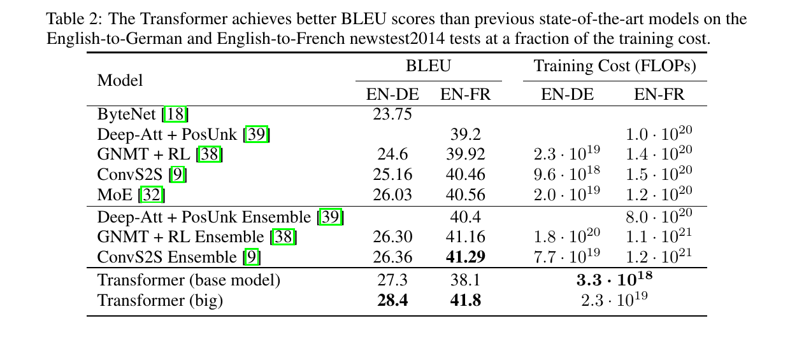

08 · RESULTS

BLEU scores and training costs on WMT 2014 EN–DE / EN–FR (newstest2014). Table 2, paper p. 8.
28.4 BLEU
EN→DE: >2.0 above the best previously reported model, including ensembles
41.8 BLEU
EN→FR: best single model, at under 1/4 of the prior training cost
3.3×10^18
FLOPs to train the base model — yet it already beats all prior models and ensembles
Visual: Table 2 (paper p. 8); text: §6.1 Machine Translation (paper p. 8).